PEC: Lecture 1
Welcome to Plants, Earth and Climate
Instructor: Jarmila Pittermann
- PhD University of Utah (Ecophysiology of Conifers)
- MSc University of Toronto, Canada (C4 Photosynthesis)
- BA&Sc McMaster University, Canada
Welcome to Plants, Earth and Climate
Teaching Assistant: Hugh Leonard
- Doctoral Candidate (Ecophysiology of post-fire mixed evergreen communities)
- BSc UCSC (Transfer from West Valley College)
Plants are important
Plants are the foundation of life and human existence
We depend on them for survival, in otherwise lifeless space
We ourselves are shaped by milions of years of interactions with plants
Plants are important
Plants are a source of energy: humanity is dependent on photosynthesis
Plants have no voice of their own; we take them for granted
Modern life has obscured the direct connection to plants
Plants are the furniture backdrop of most people’s lives
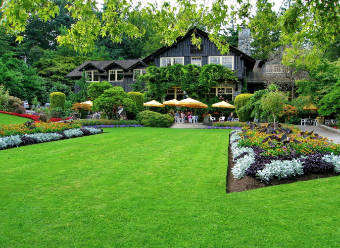
Goals of Plants, Earth, & Climate
Understand:
- how biotic and abiotic factors shape the Earth’s biosphere
- essential plant physiology
- the basics of biogeochemical cycles
- the basics of abiotic climate regulation
- how elevated CO2, warmer temperatures, and drought challenge plants
- the response of ecosystems and agriculture to human-caused climate forcing
- plants in the deep past
- limits to adaptation
- innovations in plant breeding
Course Structure
Part I Plant metabolism in the context of core climate and biogeochemical processes
Course Structure
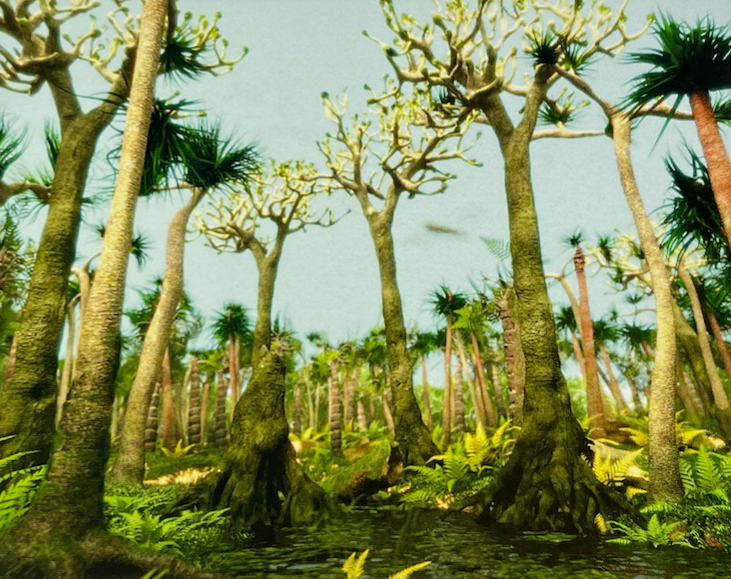
*Part II** Plants, earth, and climate from a deep time perspective
Course Structure
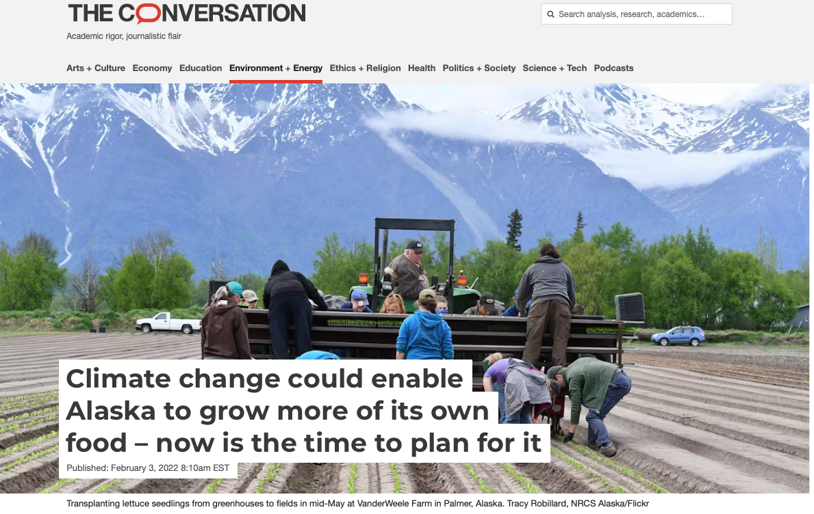
Part III The future of plants, earth, and climate
Complex system

The administrative stuff
All course content on Canvas
Course evaluation details on syllabus
About your assignments
How I want you to think:
- Example: What is the impact of elevated temperatures on trees?
The use of generative AI
- I cannot and will not police you
- AI will cheat you in the long run
- You must be able to express yourself clearly on tests
Come to lectures and sections
- Best and most direct way to learn
- Hundreds of dollars per lecture
- Lecture material will be posted prior to lecture
Great questions to ask
- What does that mean?
- What is the connection between X and Y?
- Can you explain?
- Please repeat.
- What if…? Do you know…? Could it be that…?
Let’s get started!
Consider the current context per the European Space Agency
Lecture 1: Plants, diversity, vegetation distribution across the globe
WHAT IS A PLANT?
- Plants are multicellular photosynthetic organisms that have adapted to life on land.
- They use energy from the sun to turn carbon dioxide into sugars: autotrophs
- Some plants have adapted to an aquatic lifestyle.
- Some of the most important autotrophs are not plants at all but algae!
Plant Structure
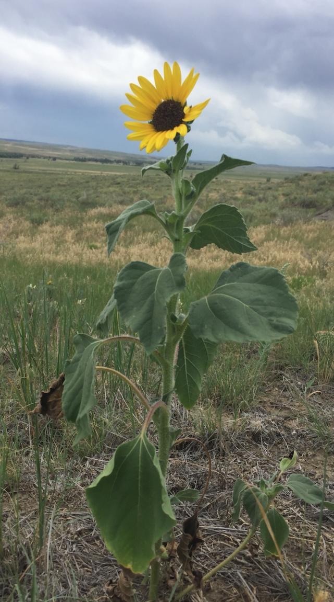

Core plant tissues and their function
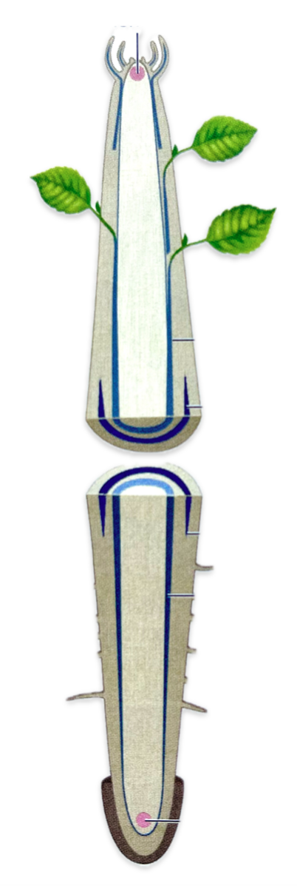
Essential plant metabolism: Water transport
Key points
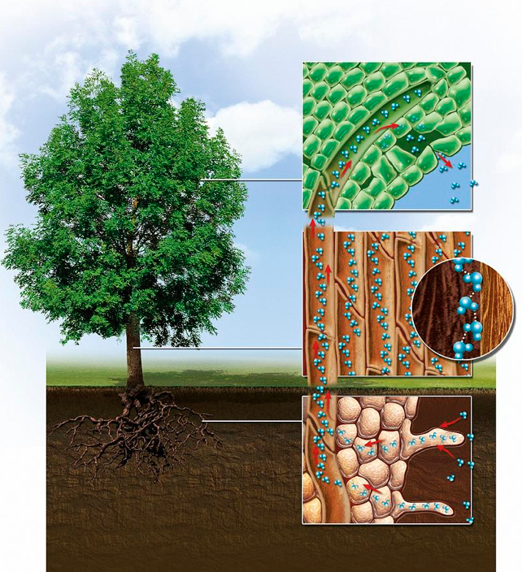
Essential plant metabolism: Photosynthesis
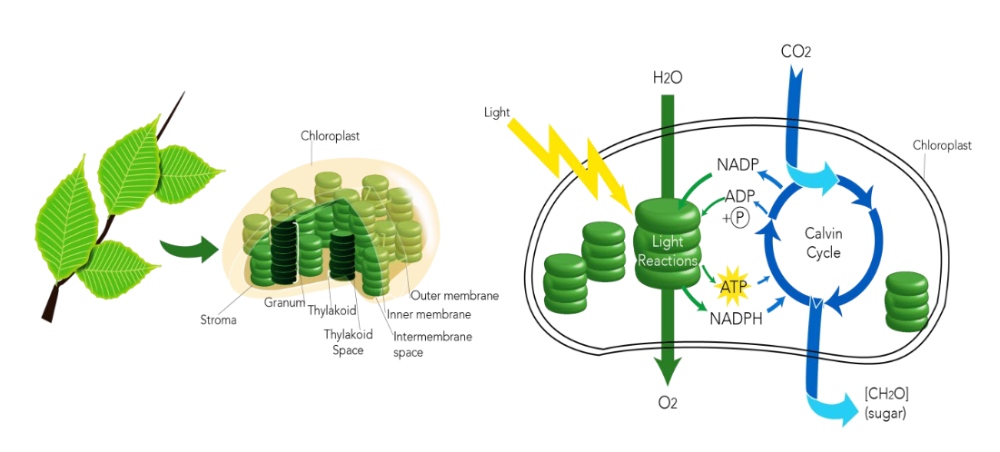
Plant diversity over time.
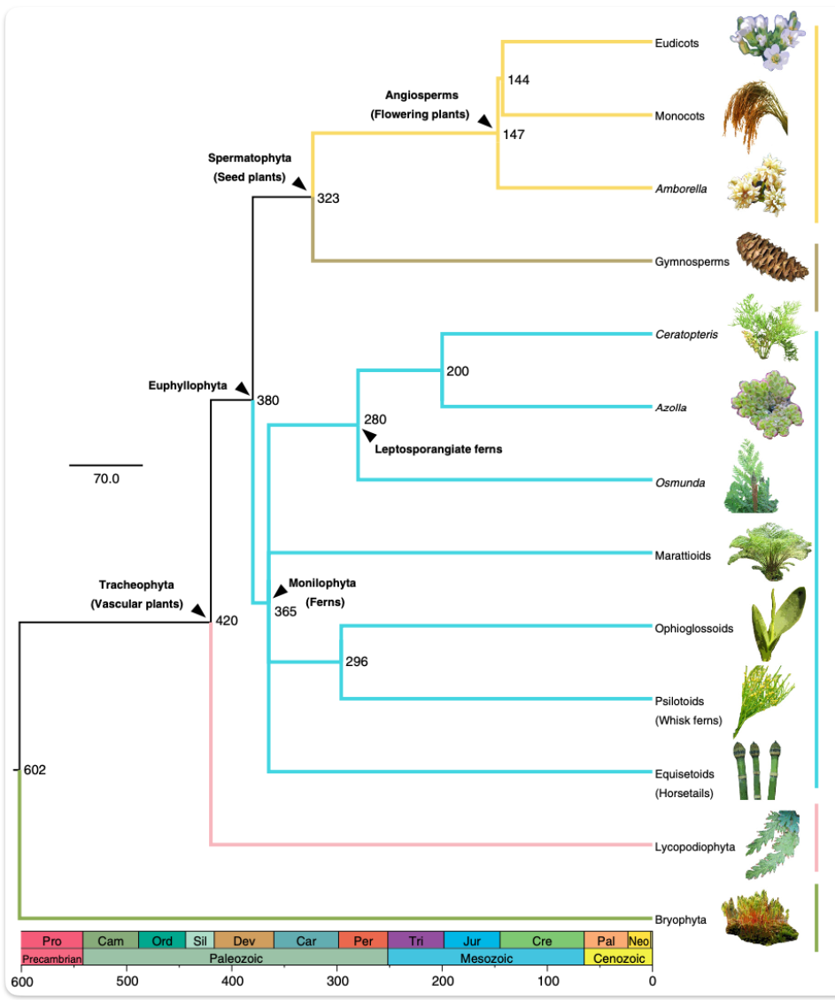
Bryophytes
- earliest-derived
- spore-dispersing
- liverworts
- hornworts
- mosses
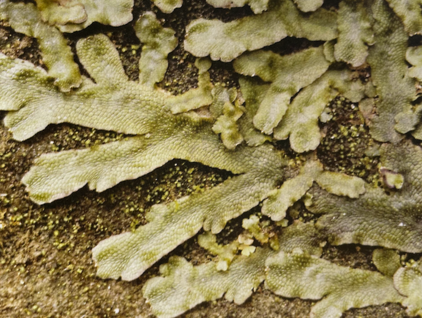
Fern allies
- vascular tissue
- simple leaves
- spores
- lycopods
- horsetails
- whisk ferns
- Carboniferous
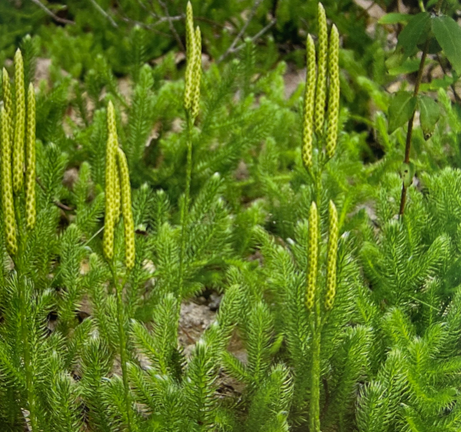
Ferns
- vascular tissue
- true leaves
- spores
- extremely diverse
- Carboniferous coal swamps
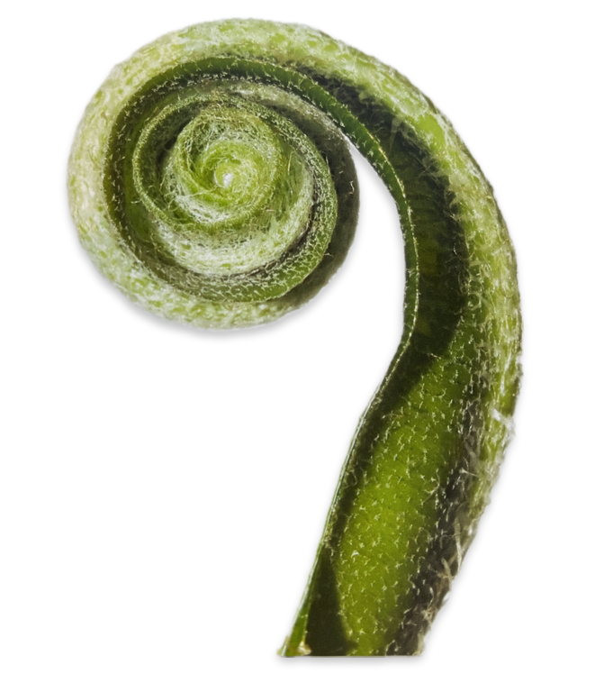
Gymnosperms
- seed producing
- gingko
- cycads
- gnetophytes
- conifers
- Mesozoic
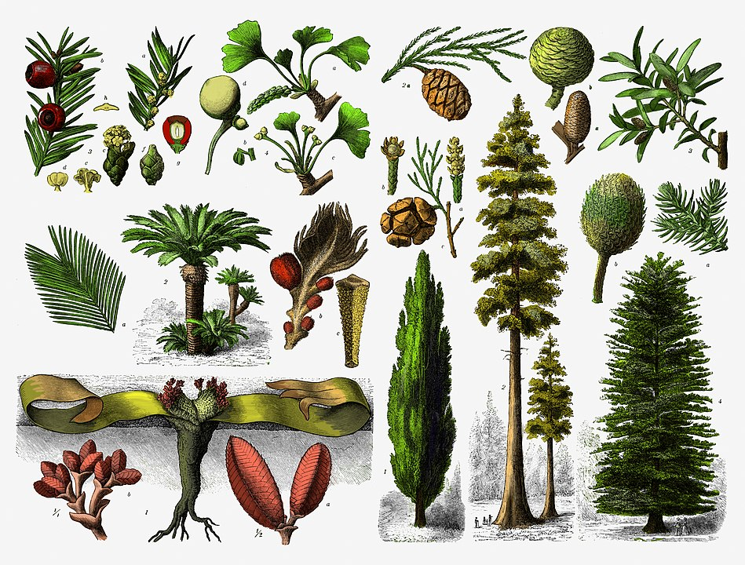
Angiosperms
- flowering seed plants
- extremely diverse
- complex reproduction
- pollinators
- seed dispersers
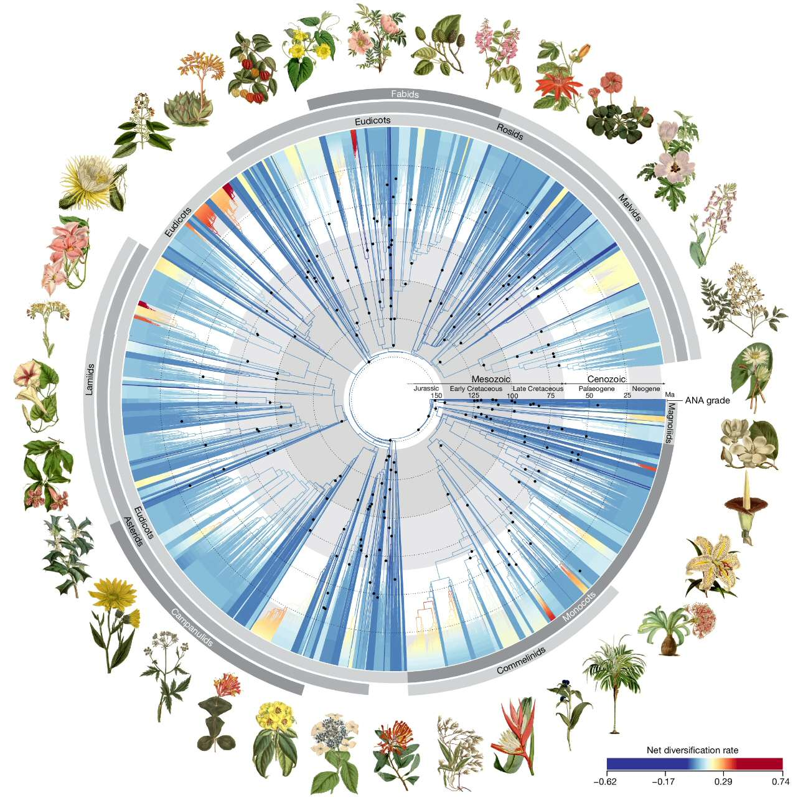
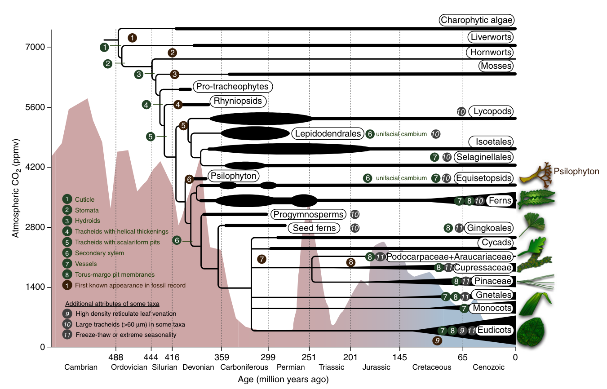 Geological Time Scale from Geological Society of America
How did plants evolve?
Evolutionary adaptations to life on land
Reproductive innovations were critical
- no water required for reproduction: pollination evolved!
- seeds are desiccation-tolerant
Global vegetation biomes
Decent online sources:
Global Forest Watch interactive maps
Summary of Lecture 1
What is a Plant?
- Multicellular photosynthetic organisms adapted to land
- They use sunlight to turn CO₂ into sugars (autotrophs)
- Adapted to a wide range of habitatPlant Anatomy & Physiology
- Core tissues facilitate structure, water transport and photosynthesis.
- Photosynthesis and water transport are intertwined.Plant Diversity and Evolution
- Bryophytes: Earliest spore-dispersing plants (liverworts, hornworts, mosses).
- Fern Allies: Vascular plants with simple leaves (lycopods, horsetails, whisk ferns).
- Ferns: Diverse vascular plants with true leaves, prominent in Carboniferous swamps.
- Gymnosperms: Seed-producing plants (gingko, cycads, conifers) from the Mesozoic era.
- Angiosperms: Flowering plants with complex reproduction involving pollinators and seed dispersers.Evolutionary Innovations
- Adaptations to land life: vascular tissue, true leaves, seeds.
- Reproductive advancements: pollinators, seed dispersers Suggested study questions
- How do plants transport water?
- How does photosynthesis work?
- What are some innovations of plant life on land?
- What governs vegetation distribution around the globe?
- What are Holdridge life zones, and how are they defined?